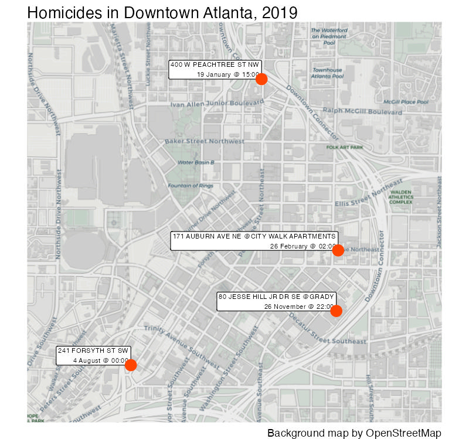
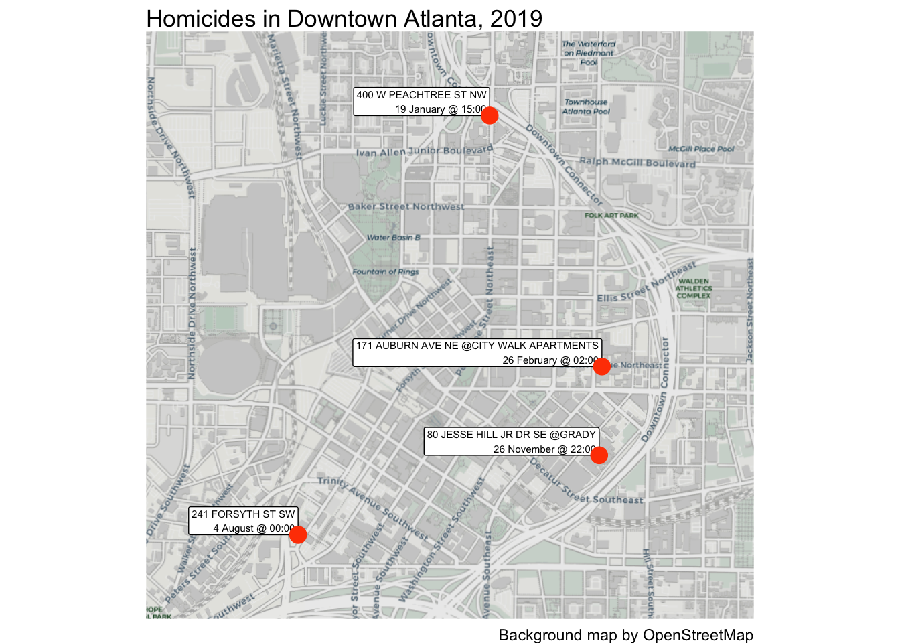
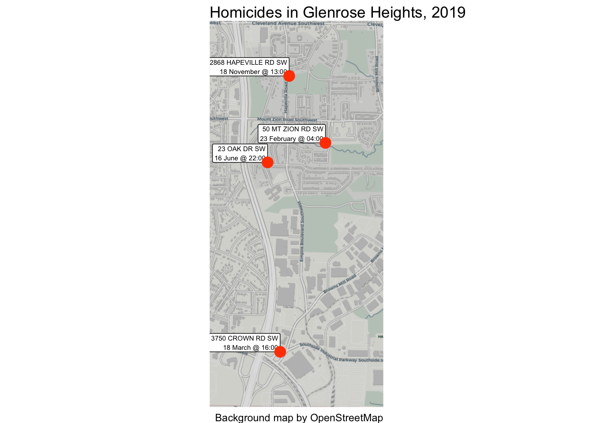

2 Your first crime map
This chapter provides a beginner-friendly introduction to creating crime maps in R. We will walk through the essential steps, including loading pre-prepared crime data, processing it into a usable format, and visualising it on a map. This chapter introduces key R concepts like working with spatial data and using simple features (SF) objects. You’ll learn to distinguish between temporary and permanent code, understand the basics of coordinate reference systems, and produce a basic map. Let’s get started!
TipBefore you start
- Open Positron or – if you already have Positron open – start a new R session by clicking the Restart R (⟳) button in the Console panel in Positron. This makes sure no code you have run previously will interfere with what you do here.
- Make sure you are working in the crime mapping project workspace you created in Section 1.5. In the top-right corner of the Positron window, you should see a folder icon and the words
crime-mapping. If not, click the File menu, then Open Folder … and choose thecrime-mappingfolder you created in Section 1.5.
2.1 Introduction
In this chapter we will use R to produce a simple crime map. To do this, we will skip over lots of the detail of how R works and what choices we should make in creating maps. We will return to all these details in future sessions, so for now please don’t worry about understanding every single line of code. Everything will become clear as we work through this book.
By the end of the chapter, you will have two R script files and will have produced two maps. The first map we will make is this map of four homicides recorded in Downtown Atlanta in 2019:
By the end of this chapter, you will have practised how to:
- create and save an R script;
- run code from a script in Positron;
- download data from the internet;
- load data into R;
- convert data into a spatial format;
- draw crime locations on a base map; and
- decide whether code belongs in a script or in the R Console.
You are not expected to remember all the code used in this chapter. The aim is to complete the process once and begin to recognise its main steps.
Making crime maps is a specialist type of data analysis. You can think of data analysis as being like a recipe for making dinner: we start with ingredients (data) and then follow steps (data processing) to make a finished meal (in this chapter, a map), potentially adding some more ingredients along the way. In this case, the sequence of steps in our recipe looks a bit like this:
Load data
from a file into an R object
Wrangle data
into the correct format for mapping
Draw map
based on the wrangled data
Some (perhaps all) of the code we will use to do this will be unfamiliar. That is expected – don’t expect to remember everything the first time. We will return to each part in later chapters, so for now concentrate on following the overall sequence and noticing what each block of code achieves.
We will begin by creating a script in which to keep our code.
2.2 Permanent and temporary R code
To get started we’re going to create a new R code file that we can use to store the code we will use to create our first crime map. To do this:
- Click the File menu in Positron and then click New File ….
- A menu will appear – the cursor should already be in the box marked Select File Type or Enter File Name…. In that box, type
chapter_02a.Rand press ReturnReturn on your keyboard. - A window will appear asking you where to save the file. Navigate to the
crime-mappingfolder you created in Section 1.5, then to theRsubfolder. Now click Save.
TipWhy are we naming the file
chapter_02a.R?
In each chapter of this book, you will create one or more R script files to store the code needed to produce a map or complete some other task.
We will learn more about naming files in Chapter 5, but for now it’s enough to know that file names should help us keep our files organised. We will create two separate code files in this chapter, so we will use letters after the chapter number to distinguish between the different files.
Each chapter in this book includes chunks of R code that you can run in Positron. We can think of this code as falling into two categories. Permanent code is code that we need to run to complete a piece of data analysis. For example, in the next section we will see some permanent code that loads some crime data. We type permanent code in the R script file that we have just created. By the end of this chapter, the script file we have just created will contain all the code needed to make a basic crime map.
As well as permanent code, we sometimes also need to write temporary code. This is code that we don’t need to complete an analytical task, but we do need to write the permanent code that completes a task. For example, we might need to write a piece of code that shows us the name of each column in a dataset, so we can refer to columns by name in our script file. Once we know the names of the columns, we no longer need the code we wrote to find out the column names, which is why we refer to it as temporary code.
Temporary code is not written in our R script file, because including everything in a script file would make it much more complicated and harder to keep track of. Instead, we write temporary code in the Console panel in Positron.
To help keep track of which code in this book is permanent code and which is temporary code, each chunk of code will either be labelled with the name of the R script file you should add it to, or the word ‘Console’ to indicate that it is temporary code you should type into the R Console.
QuizPermanent and temporary code
What is the difference between permanent and temporary code?
Why is temporary code written in the R Console instead of a script file?
2.3 Loading crime data
2.3.1 Loading packages
Before we can work with our data, we first load packages of functions for use in the analysis. For example, we will load the tidyverse package, which automatically loads several packages that are useful for data wrangling and analysis. The tidyverse package is the package we will use most often during this course, so much so that we will load it at the start of every script that we write.
Copy the code below and paste it into the blank file chapter_02a.R that you created earlier. This adds these lines of code to your script, but you need to run that code for it to do anything. It’s easy to forget to run the code you’ve written, so whenever you write a piece of code in a script file, remember to run it!
To run this code in Positron, you highlight the lines of code you want to run and then either:
- click the triangular Execute Code button in the top-right corner of the R script panel in Positron, or
- press on your keyboard.
TipHow do I find the keys?
The Enter or Return key on your keyboard may be marked ⏎. On Mac keyboards, the Command key is sometimes marked ⌘.
If you just want to run one line of code, you don’t need to highlight the whole line to run it. Just place the cursor anywhere on that line, then either click the triangular Execute Code button or press .
Highlight both lines of code and press the triangular Execute Code button or press on your keyboard. You will see that nothing happens in the R script, but the lines of code have been copied into the Console just above those messages. This means you can use the R Console as a record of all the code you have run in Positron.
QuizLoading packages
How do you run a line of code in Positron without highlighting the whole line?
Which package do we load to simultaneously load common packages used for data wrangling and analysis?
2.3.2 Loading data
The first task in creating any crime map is to obtain the crime and other data necessary. In many cases preparing the data for analysis and mapping will be a substantial task, but in this case we are going to use some pre-prepared crime data together with a pre-drawn street map (which we will ask R to download automatically when it draws the final map).
The data we will use will be records of homicides in the Downtown neighbourhood of Atlanta, Georgia, in 2019. This data is stored in an online repository, so the first thing we need to do is to download the data and store it so we can use it now and in future. We could use a web browser to download the data, then move it to the folder in which we want to store it, but there are several reasons not to do that. Two reasons will be enough for now: first, manually downloading the data often needs more steps (which becomes tedious if you have to do it many times), and second, it is easy to make mistakes when downloading data manually. Instead, we will use R to download the data for us.
To do almost anything in R we use one or more functions. A function in R is a piece of code that performs an action. You can think of functions as being like verbs (i.e. ‘doing words’), which is why the names of functions are often verbs such as filter(), select(), etc. To download the homicide data we need we will use two functions, which we combine together using something called a pipe operator that looks like this: |>. We will come back to the pipe operator later, because it is important but can be hard to understand. For now, just think of the combination of two functions linked by a pipe as a single unit of code – we will come back to the details later.
Copy these lines of code into your R script file. Now click anywhere on either line of the code and press on your keyboard to run the code. Assuming your computer is connected to the internet, you should see some lines of text appear in the R Console.
chapter_02a.R
<httr2_response>
GET https://mpjashby.github.io/crimemappingdata/downtown_homicides.csv
Status: 200 OK
Content-Type: text/csv
Body: On disk '/Users/mattashby/Documents/Crime Mapping Book/data/raw/downtown_homicides.csv' (349 bytes)
TipWhat does this output mean?
The request() and req_perform() functions are part of the httr2 package, which is used to download data from the internet. The output you see in the R Console is a summary of the request that was made to download the data. It shows the URL that was requested and the status code returned by the server. In this case the status code 200 OK means the request was successful. The output also shows the size of the downloaded file.
On the left-hand side of the Positron window, you should now be able to see that a new file called downtown_homicides.csv has appeared in the data/raw folder. This is the data we will use to create our first crime map.
Now we have downloaded the data, we need to load it into our current R session so that we can use it. We will do that using the read_csv() function, which is part of one of the packages we loaded earlier by loading the tidyverse package. Copy this line of code into your R script file, click anywhere on the line of code and press on your keyboard to run the code.
chapter_02a.R
Rows: 4 Columns: 4
── Column specification ────────────────────────────────────────────────────────
Delimiter: ","
chr (1): label
dbl (3): report_number, longitude, latitude
ℹ Use `spec()` to retrieve the full column specification for this data.
ℹ Specify the column types or set `show_col_types = FALSE` to quiet this message.
TipWhat does this output mean?
When read_csv() loads data from a file, it produces a short summary of the data and prints that in the R Console. Looking at this message, you can see that the data contains 4 rows and 4 columns of values in each row. You can also see the names of the columns: ‘report_number’, ‘label’, ‘longitude’ and ‘latitude’.
ImportantMultiple functions with similar names
Sometimes R has several functions that have similar names but do different things. That means it is very important to pay attention to which function you need in any particular set of circumstances. In this case we are using the read_csv() function, which does a slightly different thing from the similarly named read.csv() function (note the . instead of the _). It is usually better to use read_csv() because it produces a type of object (called a tibble) that is easier to work with than the object (called a data frame) that is produced by read.csv(). For that reason, we will always use read_csv() in this course.
We have stored the results of the read_csv() function in an R object called homicides. An object in R is anything that stores any type of data. There are many types of objects, but for this chapter we don’t need to explore these in any more detail. All you need to remember for now is that objects store data (which is why their names are often nouns) and functions do things.
2.3.3 Viewing the data
To check the data has been loaded correctly, we can view the loaded data using the head() function. By default, head() prints the first six rows of the data stored in an object, but in this case the data only has four rows so all of them are printed. Copy this code into the R Console and press on your keyboard.
# A tibble: 4 × 4
report_number label longitude latitude
<dbl> <chr> <dbl> <dbl>
1 190191530 "400 W PEACHTREE ST NW\n19 January @ 15:00" -84.4 33.8
2 190570315 "171 AUBURN AVE NE @CITY WALK APARTMENTS\n26… -84.4 33.8
3 192160018 "241 FORSYTH ST SW\n 4 August @ 00:00" -84.4 33.7
4 193302338 "80 JESSE HILL JR DR SE @GRADY\n26 November … -84.4 33.8
TipError: object ‘homicides’ not found
If you see the error message Error: object 'homicides' not found, it means that the homicides object has not been created. There are two common causes of this error:
- You have not run the line of code that loads the data into R (the line that starts with
homicides <- read_csv(...)). To fix this, go back to your R script file and run that line of code, then try runninghead(homicides)again. - There is a typo in the code
head(homicides)– maybe a misspelling of the word ‘homicides’. Check the code matches what is written above, then try running it again.
Note that we did not add this line of code to our R script file, because it is temporary code that we only need to run once to check the data has been loaded correctly. We don’t need to run this code again, so we don’t need to store it in our R script file. Storing temporary code in our R script files makes those files harder to work with because they are more complicated, which increases the chances of you making mistakes. Including temporary code in R script files will also cause additional problems later when we start writing reports in R (which we will learn about in Chapter 14). It’s best to get into good habits now, so make sure you only add permanent code to your R script files and run temporary code in the R Console.
The output produced by the head() function shows that the data contain four columns: a unique identifier for a homicide, a label describing when and where that homicide occurred, and the longitude and latitude of the homicide location. We can use this data to plot the homicides on a map.
ImportantQuoted and unquoted values
In the code head(homicides), there are no quote marks around the word homicides.
Almost all programming languages will interpret words differently depending on whether they have quotes around them or not. In this case, if you type the code head(homicides) then R will print the first few rows of the data stored in the homicides object.
On the other hand, if you type the code head("homicides") or head('homicides'), R will interpret this as an instruction to print the first few elements of the literal text ‘homicides’. Since the text ‘homicides’ contains only one element (more about that later), head("homicides") will just print the word ‘homicides’.
QuizLoading data
Why is the read_csv() function preferred over read.csv() in this chapter?
What is the output of the following R code: head(homicides)?
2.4 Processing the data
Before we can plot the data on a map, we have to complete some pre-processing steps – step 2 in our recipe. Having to process data before being able to analyse or visualise it is common in all types of data analysis, but spatial analysis often involves additional processing that takes account of the special features of spatial data.
Load data ✓
from a file into an R object
Wrangle data
into the correct format for mapping
Draw map
based on the wrangled data
2.4.1 Converting the data into a spatial format
We need to complete two steps to get our data ready for making a map. First we need to convert the data into a simple features or SF object, which is a special type of R object that can be used by functions that process spatial data. We will cover the details of the st_as_sf() function that converts our data into an SF object later on.
Copy this code into the chapter_02a.R file, then click anywhere on the new line of code and press on your keyboard to run the code.
When you run this code, it looks like nothing happened. This is because the results of the code are stored in the homicides_sf object. We can check the contents of homicides_sf in the R Console as before:
Simple feature collection with 4 features and 2 fields
Geometry type: POINT
Dimension: XY
Bounding box: xmin: -84.39732 ymin: 33.74827 xmax: -84.38185 ymax: 33.76614
Geodetic CRS: WGS 84
# A tibble: 4 × 3
report_number label geometry
<dbl> <chr> <POINT [°]>
1 190191530 "400 W PEACHTREE ST NW\n19 January @ … (-84.3876 33.76614)
2 190570315 "171 AUBURN AVE NE @CITY WALK APARTME… (-84.38185 33.75546)
3 192160018 "241 FORSYTH ST SW\n 4 August @ 00:00" (-84.39732 33.74827)
4 193302338 "80 JESSE HILL JR DR SE @GRADY\n26 No… (-84.38198 33.75168)The data looks identical to before running the function st_as_sf(), except that the two columns called longitude and latitude have disappeared and there is now an extra column called geometry. The geometry column is important because lots of functions in R can recognise that the geometry column represents a location on the surface of the Earth that can be used to analyse and map data in space.
2.4.2 Transforming the coordinate reference system
The geometry column in the homicides_sf object represents locations on the surface of the Earth using coordinates (pairs of numbers). In this case, the coordinates are expressed as longitudes and latitudes, but there are lots of other types of coordinates (known as coordinate reference systems).
We’ll learn more about coordinate reference systems in Chapter 4, but for now it’s enough to know that each different system has advantages and disadvantages. To make the homicide locations easier to add to a map, we are going to first transform the coordinates from longitudes and latitudes to a coordinate reference system that is specifically designed for mapping data for the US state of Georgia.
To do this, we will use the st_transform() function, together with a code representing the coordinate reference system we want to use (you don’t need to understand this code at this stage). Copy this code into the chapter_02a.R file, click anywhere on the new line of code and press on your keyboard.
Once again, we can check what the result looks like in the R Console.
Simple feature collection with 4 features and 2 fields
Geometry type: POINT
Dimension: XY
Bounding box: xmin: 678630.6 ymin: 415608.5 xmax: 680065.5 ymax: 417588.4
Projected CRS: NAD83 / Georgia West
# A tibble: 4 × 3
report_number label geometry
<dbl> <chr> <POINT [m]>
1 190191530 "400 W PEACHTREE ST NW\n19 January @ … (679535.4 417588.4)
2 190570315 "171 AUBURN AVE NE @CITY WALK APARTME… (680065.5 416402.8)
3 192160018 "241 FORSYTH ST SW\n 4 August @ 00:00" (678630.6 415608.5)
4 193302338 "80 JESSE HILL JR DR SE @GRADY\n26 No… (680052.6 415983.6)The data looks almost identical, except that the values in the geometry column have changed (you don’t need to understand yet the details of how these numbers are different). Now that we’ve completed the data processing, we can go on to produce the map itself.
2.5 Checking our progress
You have now completed the first two stages of the process:
- Load: download the crime data and load it into R.
- Prepare: convert the data into a spatial format.
The final stage will be to draw the map. Before moving on, let us check that everything needed for that stage is ready.
At the moment, the file chapter_02a.R that you have created should look like this:
chapter_02a.R
# Load the R packages we need to analyse this data
pacman::p_load(ggspatial, here, httr2, sf, tidyverse)
# Download the data from a URL and store it in a local file
request("https://mpjashby.github.io/crimemappingdata/downtown_homicides.csv") |>
req_perform(path = here("data", "raw", "downtown_homicides.csv"))
# Load the data into R
homicides <- read_csv(here("data", "raw", "downtown_homicides.csv"))
# Convert the data to a simple features object, which we can use in functions
# that work on spatial data
homicides_sf <- st_as_sf(
homicides,
coords = c("longitude", "latitude"),
crs = "EPSG:4326"
)
# Transform the data coordinate reference system
homicides_sf_trans <- st_transform(homicides_sf, "EPSG:26967")Note how this code tells a clear story about exactly what you have done. This code is easier to understand because:
- we have left blank lines between each piece of code so that it’s easy to see each separate task that is being completed, and
- we have used comments (lines of code starting with
#) to explain what each step does.
We will learn more about writing code that’s easy to read – and why it’s important to do that – in Chapter 5.
You should now be able to find:
chapter_02a.Rin theRfolder;downtown_homicides.csvin thedata/rawfolder; and- the objects
homicides,homicides_sfandhomicides_sf_transin the Session panel in the top-right section of the Positron window.
The Session panel shows you a list of all the objects that you have created since the start of your R session. In this case, the objects represent successive versions of the data:
| Object | What it contains |
|---|---|
homicides |
The data loaded from the CSV file, which should have 4 rows and 4 columns |
homicides_sf |
The same records converted into spatial data, which should have 4 rows and 3 columns |
homicides_sf_trans |
The spatial data transformed ready for this map, which should have 4 rows and 3 columns |
If any of those objects are missing from the list of objects in the Session panel, you might have forgotten to run the relevant lines of code after pasting it into your script file. If that’s the case, you only need to re-run the relevant lines of code to create the missing object – you don’t need to start again from the beginning. Find the code that creates the object that’s missing, highlight it, and press on your keyboard to run it. You should now see the missing object appear in the Session panel.
You are now ready to complete the final stage: drawing the map.
QuizProcessing the data
What does the st_as_sf() function do?
Why is it important to use comments in your R script?
2.6 Drawing the map
We are now ready to produce our map of homicides in downtown Atlanta – the final step in our recipe.
Load data ✓
from a file into an R object
Wrangle data ✓
into the correct format for mapping
Draw map
based on the wrangled data
So that people viewing the map will understand where the homicides occurred, we will plot the homicides on top of a base map showing streets, parks and other geographic features obtained from an online web mapping service. Almost all crime maps need a base map, otherwise it would be very difficult to understand where the crimes occurred.
The code needed to produce the map looks quite complicated, but we don’t need to understand it all at this point – we will go through this code in Chapter 4. For now, copy the code into the chapter_02a.R file, put the cursor somewhere on the line that includes the function ggplot(), then press on your keyboard.
chapter_02a.R
# Create the map
ggplot(homicides_sf_trans) +
annotation_map_tile(type = "cartolight", zoomin = 0, progress = "none") +
geom_sf_label(
aes(label = label),
fill = "white",
hjust = 1,
size = 2,
vjust = 0
) +
geom_sf(colour = "orangered1", size = 4) +
scale_x_continuous(expand = expansion(mult = 0.5)) +
scale_y_continuous(expand = expansion(mult = 0.2)) +
labs(
title = "Homicides in Downtown Atlanta, 2019",
caption = "Background map by OpenStreetMap"
) +
theme_void()
When you run this code in Positron, you should see a map like the one above appear in the Plots panel in the bottom-right of the Positron window. Depending on the size of the screen you are using, the map might be quite small. If so, you might want to split the Plots panel out into a separate window so that you can see the map more clearly. To do this, look for two icons in the top-right corner of the Plots panel. The icon on the right is a rubbish bin, but the icon to the left of it looks like a square with an arrow pointing out of it. Click the small downward-facing triangle between the two icons and then click Open Plots Gallery in New Window. You will now see a larger version of the map in a separate window – you can resize this window to make the map as large as you want on your screen.
The map we have created with this code is very basic. Later in the course we will learn to make much better maps. For now, you can experiment with changing the appearance of the map by changing various parts of the code above. For example, you could change the colour of the points that mark the homicides by changing the code colour = "orangered1" to colour = "mediumblue", or change the base map to a different style by changing the code type = "cartolight" to type = "cartodark". Try some of these out – after you make each change, press on your keyboard to run the code again to see how the map changes.
When you have finished experimenting with this code, save the chapter_02a.R file by hitting on your keyboard.
QuizDrawing the map
Why is a base map useful on a crime map?
Which function starts the block of code that is used to convert the processed data into a map?
Which function adds the base map showing streets, parks and other geographic features?
What does aes(label = label) do in the map code?
2.7 Putting the code together
Now we have walked through the different parts of the code, we can create a map from scratch in a single block of code. In this example, we will map homicides in Glenrose Heights neighbourhood of Atlanta. Since the area covered by the map is derived from the data itself, the extent of the map will update automatically.
Create a new script file in Positron by clicking the File menu then New File. In the box that appears, type chapter_02b.R and press ReturnReturn on your keyboard, then choose to save the file in the same R folder as we saved chapter_02a.R in. When the new file opens, paste this code into it.
chapter_02b.R
# Load the R packages we need to analyse this data
pacman::p_load(ggspatial, here, httr2, sf, tidyverse)
# Download the data from a URL and store it in a local file
request(
"https://mpjashby.github.io/crimemappingdata/glenrose_heights_homicides.csv"
) |>
req_perform(path = here("data", "raw", "glenrose_heights_homicides.csv"))
# Load the data into R
homicides <- read_csv(here("data", "raw", "glenrose_heights_homicides.csv"))
# Convert the data to a simple features object, which we can use in functions
# that work on spatial data
homicides_sf <- st_as_sf(
homicides,
coords = c("longitude", "latitude"),
crs = "EPSG:4326"
)
# Transform the data co-ordinate reference system
homicides_sf_trans <- st_transform(homicides_sf, "EPSG:26967")
# Create the map
ggplot(homicides_sf_trans) +
annotation_map_tile(type = "cartolight", zoomin = 0, progress = "none") +
geom_sf_label(
aes(label = label),
fill = "white",
hjust = 1,
size = 2,
vjust = 0
) +
geom_sf(colour = "orangered1", size = 4) +
scale_x_continuous(expand = expansion(mult = 1.0)) +
scale_y_continuous(expand = expansion(mult = 0.2)) +
labs(
title = "Homicides in Glenrose Heights, 2019",
caption = "Background map by OpenStreetMap"
) +
theme_void()<httr2_response>
GET https://mpjashby.github.io/crimemappingdata/glenrose_heights_homicides.csv
Status: 200 OK
Content-Type: text/csv
Body: On disk '/Users/mattashby/Documents/Crime Mapping Book/data/raw/glenrose_heights_homicides.csv' (303 bytes)Rows: 4 Columns: 4
── Column specification ────────────────────────────────────────────────────────
Delimiter: ","
chr (1): label
dbl (3): report_number, longitude, latitude
ℹ Use `spec()` to retrieve the full column specification for this data.
ℹ Specify the column types or set `show_col_types = FALSE` to quiet this message.
When we want to run all the code in a file, it would be tedious to run each chunk of code separately. Instead, we can run all the code in a file in one go by clicking anywhere in the file, pressing to select all the code, then pressing to run all the code at once. You should see some messages appear in the R Console, and the final map appear in the Plots panel.
Save the chapter_02b.R file by hitting on your keyboard.
2.8 In summary
Well done – you have created your first map!
You may not have understood every line of code in this chapter, but we will cover them all in more detail over the rest of this course. By the end of this course, you will be able to write code like this to create many different types of crime map.
You can now:
- create and save an R script in the correct project folder;
- run permanent code from a script and temporary code in the Console;
- download a dataset and load it into R;
- recognise the steps used to prepare point data for mapping; and
- use prepared spatial data to produce a basic crime map.
You do not need to be able to reproduce the whole script from memory. Analysts routinely reuse previous scripts and consult documentation. The important achievement is that you can follow the workflow, recognise its main stages and make controlled changes to it.
NoteKeep these files
Keep both chapter_02a.R and chapter_02b.R in your R folder. They are working examples that you can return to when you need to remember how to load spatial data or begin a new crime map.
The map we have produced in this chapter is effective for showing the locations of just a few crimes, but is too limited to show more complicated patterns or larger datasets. In the following chapter, we will learn how to produce more sophisticated maps and spatial analysis. We will also learn how each of the functions that we have used in this chapter work.
QuizRevision questions
Answer these questions to check you have understood the main points covered in this chapter. Write between 50 and 100 words to answer each question.
- Why is it important to differentiate between temporary and permanent code when working in R? Provide an example of each and explain how they are used in creating a crime map.
- Explain why it is useful to store spatial data as a simple features (SF) object. What steps are required to convert crime data into an SF object, and why is this conversion necessary?
- What are coordinate reference systems (CRS), and why might you need to transform the CRS of spatial data? Describe how this was applied in the chapter to map homicides in Atlanta.
- What steps are involved in creating a crime map in R from loading data to visualising it? Highlight the key functions used and the purpose of each in the process.